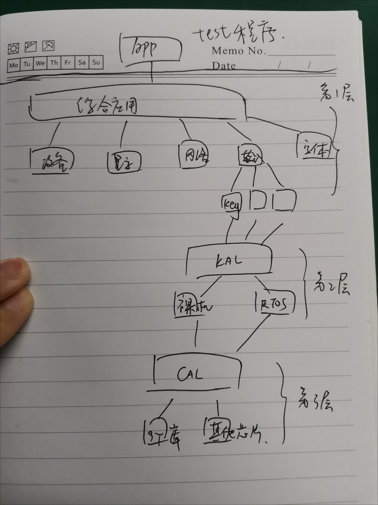
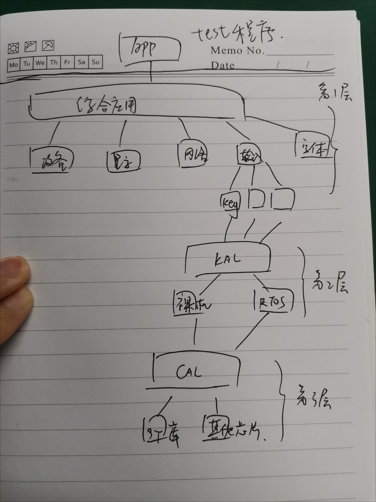
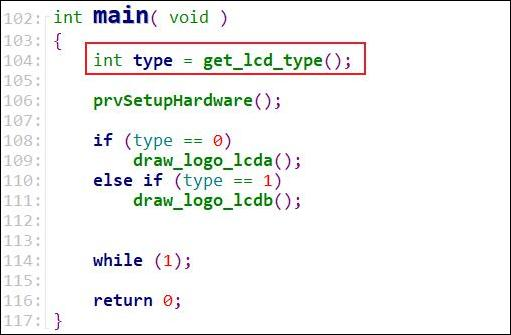
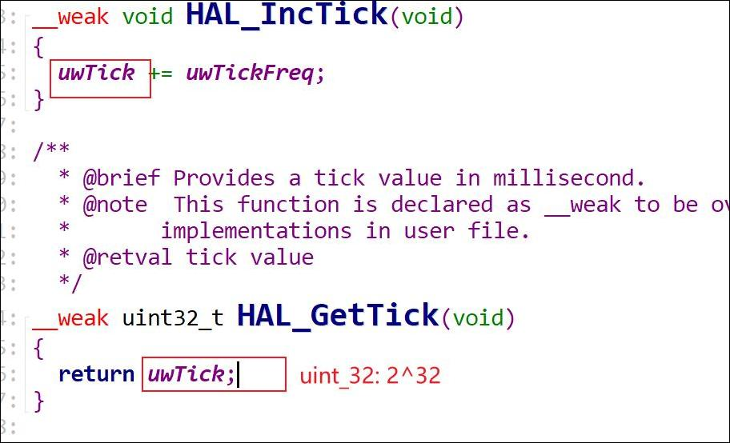

1.程序功能及框架设计
项目1_基于HAL库的智能家居
参考书：
1.1 功能演示


本项目的重点：
设计出优秀的程序框架：容易扩展、容易维护
教会大家：
1.2 框架设计
在《代码大全》第5章中，把程序设计分为这几个层次：
第1层：软件系统，就是整个系统、整个程序
第2层：分解为子系统或包。比如我们可以拆分为：输入子系统、显示子系统、业务系统
第3层：分解为类。在C语言里没有类，可以使用结构体来描述子系统。
第4层：分解成子程序：实现那些结构体(结构体中有函数指针)。
这几句话我用一个图来表示：
最外面这一层就整个系统，在里面我们又画了两个大圆圈，就是两个子系统。
子系统里面又出现出了类或者结构体。
我们在C语言里面用结构体，在C++里面用类。
在单片机的开发中，我们只能够用C，用不了C++，所以我们来讲结构体。
第3层是结构体，以前我们讲结构体的时候，说结构里里面可以放函数指针
一个结构体里面可以有：各种变量成员、有函数指针。我们可以使用一个结构体来表示一个设备、一个处理、一个操作。
第4层就是结构体里面的函数了。
1.2.1 6个子系统
在本项目中，可以分为6个子系统：
 
1.2.2 如何划分
按照数据的流向，分为输入和输出：
至少有两个系统，对于输入部分我们又可以细分：
对于输入：用户可以点击按键，点击触摸屏。
那传感器呢？传感器检测到火灾的时候，发出报警信号，这也是输入。
甚至说我们还有远程控制，就像我们举的例子，你可以使用手机来控制开发板。
所以对于输入部分，我们还可以细分成各类子系统。
对于输出，我们也可以继续细分：
输出，并不仅仅是我们在屏幕上看到的内容。
比如说去点灯、控制这些设备，它也是一种输出。
再比如说数据的保存，也算是一种输出。
所以输出也可以拆分成很多子系统。
谁把这些输入和输出组合起来？
我们又可以抽象出另外一个子系统：业务子系统
有同学称之为：输入，输出，控制逻辑三部分，基本上就是这三大类。
还有同学从应用和驱动程序的角度来：应用层、中间层，驱动层，这比较适合用来实现某一个硬件模块。
我们以LCD为例：
对于显示这么一个功能，他可以拆分成三层。
在Linux系统中，在驱动开发，有一个原则：驱动只提供功能，不提供策略。
这句话是什么意思呢？以点灯为例，驱动程序，它可以提供开灯关灯的功能。
什么时候开灯什么时候关灯，这叫策略，这不应该由驱动程序来决定。
回到我们上面的这个图，为什么这个显示的功能，要拆分成三层？
看看最底下，最底下是驱动程序，他应该提供硬件的功能：像素操作。
就是在xy某个坐标上，设置像素的颜色，但是怎么显示字符、显示多大、在哪显示，这不关驱动的事。
各司其职，不要越界。驱动就只做驱动的事。
中间是文字、图片的显示，通过库函数或者某些功能函数来实现，提供显示字符、显示图片的功能。
但是显示什么字符、在哪显示，这不关中间层的事。
显示一个字符的时候，就显示一个字符的点阵。
怎么得到点阵，功能函数来实现；
怎么显示像素，驱动程序来实现。
但是，显示什么字符，在哪里显示？显示什么图片？在哪里显示，跟驱动程序没有关系，跟功能函数也没有关系。
由最上面的那一层来决定：APP。
1.2.3 程序设计原则
我们去设计一个子系统的时候，也要明白：想让子系统比较通用，比较独立的话，就不要去做无关的事情。
1.2.4 三种单片机程序的写法
现在回过头来给先给大家讲一下整体框架，单片机程序的3种写法：

这种写法是我们刚接触单片机时最最经常用到的。
第1种写法的缺点是什么？ ABCD互相影响。
A执行时间久了就会影响到后续的函数，B执行久了也会影响到其他的函数，
使用这种方法写出来的程序，这ABCD要尽快执行。
下面是第2种写法：
就是所谓的前台后台。
main里面有个死循环，他在等待数据，得到数据之后就处理。
数据哪来的呀？来自于中断
当你按下按键之后，会产生硬件中断，程序会暂停main函数的执行，
跳去执行中断函数，在中断函数里面，他把数据放入某个缓冲区。
处理完中断之后，main函数继续执行，再次执行循环的时候，就得到了数据，就可以去做某些事情了。
第2种写法是我们当前的项目采用的，第2种写法的缺点是什么？
有三个缺点：
中断函数做的事情太多了，当前中断正在执行的时候，其他中断就被卡住，影响实时性
在没有数据的时候，main函数也在全速运行：功耗高
main要做很多事情的时候，又回退到前面的那种方式了：大家互相影响
我们讲完项目一之后，就会讲FreeRTOS：
使用多任务，程序就会非常方便，这个以后再讲。
1.3 调用关系
以unittest单元测试中按键串口的例程威力
如下图是第一步：
首先加入输入设备，即把设备放入链表：
调用AddInputDeviceGPIOKey()函数后，使用我们之前设置好的结构体，对设备进行初始化

初始化，即把链表中的每个设备，都调用它的初始化函数。

1.3.1 难点：设备初始化
我们在构造这个设备的时候就提供了一个初始化函数，这个初始化函数 的目的用于初始化硬件，就比如说设置中断

调用关系为：

这段过程有4个函数，之所以引入那么多函数，是因为：
想支持裸机、支持FreeRTOS、支持RT-Thread
想支持HAL库，也支持非HAL库
1.3.2 如何支持多操作系统

通过创建配置文件(头文件)，假设为config.h，
C文件就包含它：#include <config.h>，里面就定义：
#define CONFIG_PLATFORM_NOOS 1
这样就支持裸机。
1.4 数据流向->输入子系统
对于输入系统，我们采用前后台的框架

在发生按键中断时，就会产生数据，就执行打印操作。
我去分析一个程序的时候，我喜欢分析它的数据流向。
这个环形缓冲区大部分时间都是空的，谁往里面放数据呢？
以按键中断为例，我们按一下按键，会触发中断，会导致gpio的中断函数被调用。
中断函数把数据放入环形缓冲区，就完事了。
1.5 代码原则
我们写C程序时有头文件、有C文件。
头文件的作用是什么？ 暴露接口
C文件的作用是什么？内部实现
来看看我写的代码：
不想暴露给别人使用的函数, 就是static函数。就没有必要放在头文件里面。
头文件的作用是暴露接口,你跟同事之间的交流,就是通过头文件来交流。
同事一看你的头文件,就知道怎么去使用你的代码。
全局变量不要暴露出去，对于全局变量，绝对不建议在头文件里面声明。
举一个例子：
对于全局变量__IO uinit32_t uwTick;，
什么我们都不直接使用它？非要用一个函数?
我们假设有abcdefg等，10个文件去用到这个变量。
哪一天你说这个变量它的含义我要改改，它是值要乘以2，就要改10个文件吧。
如果我用一个函数，我只需要去改这个函数即可。
这个图是我总结的一些程序设计的原则：
1.6 tick中断-时间基准
tick中断很重要，我给大家讲讲。
对于一个嵌入式系统，他的时间基准是什么？
程序一开始运行的时候：他就会去设置一个硬件定时器，比如说设置成一毫秒产生一次中断，这叫Tick中断。
这个中断的处理函数很简单:
他只是去累加一个全局整数，这个全局整数，就是整个系统的时间基准。
对于cortex M3、M4，在CPU内部，有一个定时器： systick。
使用它，是为了增加系统的可移植性，有些芯片上面可能没有timer1、timer5，但是都有systick。
所以很多rtos甚至Linux都是使用CPU自带的这个定时器。
2.输入系统_数据结构抽象
本节源码：在GIT仓库中
rtos_doc_source\RTOS培训资料\
01_项目1_基于HAL库实现智能家居\
05_项目1_基于HAL库的智能家居\1_项目源码\10_1_input_struct
// 在这个程序的基础上修改
rtos_doc_source\RTOS培训资料\
01_项目1_基于HAL库实现智能家居\
03_项目必备的HAL库基础\1_项目源码\5_3_Serialport_RingBuffer
2.1输入子系统的构建
对这个输入子系统，在上图里我只把它拆分成两层。
但是后面随着编程的进行，我最终把它分成了5层。

所以这些程序的划分，一开始我们可能想的不够全面，但是只要记住一个原则：可移植性、减少依赖、独立
分层的事情我们等会再说，现在假设这输入子系统，就分为两层。
怎么写出来呢？
2.2 输入事件——要传递的数据
对于传递的"数据数据"，我们把它称为"输入事件"。
因为我们想要从输入子系统中得到这些数据：
例如：按键、触摸屏的点击，甚至说网络数据。
"输入事件"结构体可以支持多种类型的设备，比如按键、触摸屏、网络数据、scanf数据。
结构体类型定义如下：
typedef enum
{
INPUT_EVENT_TYPE_KEY, /*按键*/
INPUT_EVENT_TYPE_TOUCH, /*触摸*/
INPUT_EVENT_TYPE_NET, /*网络数据*/
INPUT_EVENT_TYPE_STDIO /*标准输入输出*/
}INPUT_EVENT_TYPE;
typedef struct InputEvent
{
TIME_T time; /*为了使得以后程序支持linux和裸机，这里时间TIME_T的定义应该在操作系统层面的程序中*/
INPUT_EVENT_TYPE eTypy; /*输入事件类型*/
int ix; /*屏幕坐标*/
int iy;
int ikey; /*按键*/
int iPressure; /*按下与松开状态*/
char str[INPUT_BUF_LEN]; /*输入的数据*/
}InputEvent,*PInputEvent;//InputEvent是结构体的标号，PInputEvent是结构体指针的标号
对于按键的话，有意义的成员：iKey, iPressure。
就比如说是按键a、还是按键b，是按下还是松开。
里面还有一个时间，可以记录这个按键按下或者松开的时间，就可以用来识别长按还是短按。
对于触摸屏，点击哪个触点？使用xy坐标来表示。
是点击还是松开，用iPressure来表示。
后面这个str数组是我扩充的，我们通过手机给开板发送数据时，输入事件就是网络数据：网络数据就可以保存在这个str数组里。
我们抽象出了输入事件这么一个核心的结构。
2.3 输入设备——所使用的设备
"输入事件"由"输入设备"产生

所以我们还需要定义一输入设备的结构体抽象
那么对一些不同的硬件，比如说按键、网络输入设备、串口，
以面向对象的编程思想，也应该抽象出一个结构体。
针对这个对象，想清楚需要什么操作
例如：1.清楚设备类型2.设备函数初始化指针3.设备退出函数指针
此外，由于可能存在多个设备，我们需要使用链表，对多个链表设备统一管理。
需要初始化的时候，可以从链表中提取设备调用DeviceInit函数
就还需要4.链表项
"输入设备"的核心是"获得数据事件"的函数，
结构体定义如下：
typedef struct InputDevice
{
char *name;/*传入的设备类型*/
int (*GetInputEvent)(PInputEvent ptInputEvent); /*输入事件*/
int (*DeviceInit)(void); /*设备初始化*/
int (*DeviceExti)(void); /*设备退出*/
struct InputDevice *pNext; /*链表管理*/
}InputDevice,*PInputDevice;
2.4 环形缓冲区
由于我们的设备会源源不断的产生数据，为了不让这些数据丢失，我们还需要一个环形缓冲区
于是，我又抽象出另外一个结构体：环形缓冲区。
这里面有读和写的位置，就一个input even数组。
3.输入系统_设计思路
本节源码：在GIT仓库中
rtos_doc_source\RTOS培训资料\
01_项目1_基于HAL库实现智能家居\
05_项目1_基于HAL库的智能家居\1_项目源码\10_2_input_example
3.1 程序如此设计的目的
3.2 设计思路
数据来源：多个
使用者：1个(业务子系统)
防止数据丢失：环形buffer
数据来自中断
3.2.1 共同点
输入事件被存放入环形缓冲区，业务函数从环形缓冲区读取数据。
3.2.2 不同点（谁把数据放入缓冲区buffer）
4.输入系统_实现环形缓冲区
本节源码：在GIT仓库中
rtos_doc_source\RTOS培训资料\
01_项目1_基于HAL库实现智能家居\
05_项目1_基于HAL库的智能家居\1_项目源码\10_3_input_ringbuffer
// 在这个程序的基础上修改
rtos_doc_source\RTOS培训资料\
01_项目1_基于HAL库实现智能家居\
05_项目1_基于HAL库的智能家居\1_项目源码\10_1_input_struct
4.1 实现环形缓冲区
4.1.1 环形缓冲区结构体
// smartdevice\input\input_buffer.h
#define BUFFER_SIZE 10 /* 环形缓冲区的大小 */
typedef struct
{
InputEvent buffer[BUFFER_SIZE]; /* 缓冲区空间 */
volatile unsigned int pW; /* 写地址 */
volatile unsigned int pR; /* 读地址 */
} InputEventBuffer;
4.1.2 环形缓冲区的读写操作
// smartdevice\input\input_buffer.c
static InputEventBuffer g_tInputBuffer;
int GetInputEvent(PInputEvent ptInputEvent)
{
int i = (g_tInputBuffer->pW + 1) % BUFFER_SIZE;
/* 防御式编程 */
if (!ptInputEvent)
return -1;
if(i != g_tInputBuffer->pR) // 环形缓冲区没有写满
{
g_tInputBuffer->buffer[g_tInputBuffer->pW] = *ptInputEvent;
g_tInputBuffer->pW = i;
return 0;
}
return -1;
}
int PutInputEvent(PInputEvent ptInputEvent)
{
/* 防御式编程 */
if (!ptInputEvent)
return -1;
/* 环形缓冲区空, 则返回-1 */
if(g_tInputBuffer->pR == g_tInputBuffer->pW)
{
return -1;
}
else
{
*ptInputEvent = g_tInputBuffer->buffer[g_tInputBuffer->pR];
g_tInputBuffer->pR = (g_tInputBuffer->pR + 1) % BUFFER_SIZE;
return 0;
}
}
4.2 0-4章节问题汇总
问： 按照什么去分层？
答： 先划出子系统，在实现子系统的时候再考虑分层。比如我把系统分为输入和输出，分成两个子系统，在实现输入子系统的时候，再考虑分层。所以我们首先要练的是，
怎么把整个系统拆分成多个子系统。怎么拆分成多个子系统，刚才我们已经介绍了方法：

先把它拆分成：输入、输出、控制逻辑(业务)三个子系统。
再去细分这三个子系统，得到更多、功能更加独立的子系统。
我再举一个例子：
我一开始设计这个系统的时候，并没有这个字体子系统。
后来一想，我怎么得到字符的点阵？
我可以从点阵字库里面得到，也可以从Free type字库里面得到。
去显示文字的时候，字库的来源应该独立出来。
所以我就把它分成了显示子系统，字体子系统：字体子系统，提供字模；显示子系统，根据字模来显示文字。
甚至有时候在编程的时候发现，这个子系统功能不大纯粹，又去拆分它。
问：数据成员都不会同一时刻使用，可以用共用体吗？union？
答：可以用union，也推荐使用它。
问：分层的第一步是用结构体去勾画对象吗？
答：分成的第一步，你要去理清楚功能。就比如说输入子系统：我之所以把它拆分成两层，主要是：
最下面是数据源
上层是汇总
汇总、管理，所以我就简单的把输入子系统划分为上下两层。
划分出上下两层之后，再去考虑结构体。
问：我如果有几个端口输入数据，例如uart，spi和网络，那应该创建几个不同的buf吧？
答：每个输入设备，都可以产生自己的InputEvent，里面有自己的buff。
定义类型的时候并不需要有出多个buff。每一个设备它都可以定义自己的InputEvent。
只需要一个环形缓冲区，不同输入设备的InputEvent会放入同一个环形缓冲区中循环处理
问：头文件的开头将 用到的变量、函数指针封装成一个结构体有什么好处呢？还有#pragma pack(1) 解释下？
答：分装成结构体，就使用面向对象的编程思想，用一个结构体来实现一个功能。
以后我去升级或者更换其他硬件，去修改这个结构体就可以了。
我来举一个例子，这个例子我以前曾经举过：
假设你们公司的产品会用到两个LCD，一开始的时候你这样写代码：
你使用一个宏，来决定使用lcd A还是lcd B。
在这个程序里面，他要么支持lcda，要么支持lcdb，不能够既支持a也支持b。
那如果你们公司的产品它既可以支持lcda，也可以支持lcdb的话，怎么办？
首先程序必须可以分辨LCD的类型，比如说可以去读取gpio，知道LCD的类型，代码就像上面一样。
这个代码它只有两款LCD，如果你们公司的产品支持100款LCD，怎么办？
这个时候，就可以使用结构体了，在结构体里面放函数指针。
对于第二个问题，我们可以试一下，不加这个pack的话，这个结构体是多大：
其实这个结构体，它加不加那个pack都没有影响。
去解析某些文件的头部的时候，这个pack才有用，比如BMP头部。
我给大家找一下这个BMP头部：
BMP文件的头部，它就是这么一个结构。
如果不加pack的话，或者说不加上那些attibute的话，bfType占据4字节(浪费2字节)。
使用这个结构体去构造头部，并且写入文件的时候，就会出错。
结构体的大小，比bmp文件的头部，增大了。
问：现在讲的架构 主要是针对外设的，那在做项目的时候，我们应该有个基本架构，根据项目不同进行裁剪，这个基本架构怎么做呢？
答：这些基本的架构，我曾经做过。我实现了很多比较独立的子系统：文件读写、图像文件解析、字模提取等。
这些子系统，你做得比较独立的话，在你的项目中基本上就是把他们组装起来就可以了，再加上你的业务逻辑。
如果业务逻辑的代码足够独立，那么积攒到一定的数据后，我们只需要写入不同的底层代码，然后拼接裁剪不同的业务逻辑即可，那么现在我们可以快速形成自己的项目。
问：InputDevice可以放在设备子系统里吗？
答：InputDevice在rtos里面，我将会为每一个设备创建一个任务，所以把它放到设备子系统去，不合适。
InputDevice，会调用设备子系统的函数，去获得硬件数据。
在裸机程序里， InputDevice解析数据，设备子系统提供原始的数据，也不应该把他们放在一起。
比如说，设备子系统，他可以提供说哪一个gpio被按下、被松开。
但是，这个gpio，对应哪一个按键，什么时候发生，不应该由它来做。
应该有更上一层的InputDevice，根据gpio电平、根据时间，构造出InputEvent。
这就回到我们刚才说的原则：各司其职，不要越界。
问：如何处理多设备/多数据 发送过来的数据
设置一个buffer，不同设备发过来的数据都放入buffer。在这个系统中有3个写入1个读出，使用环形缓冲区
问：每个设备如何写入buffer？即这么多设备发过来的数据，我们如何处理原始数据满足InputEvent类型？
从多个设备中获取数据，读buffer可以一样，但是写buffer不一样，需要分开不同的操作
裸机：读取GPIO，把GPIO转成InputEvent，放入buffer（这三个操作都在中断中完成）
RTOS：中断里面触发任务，任务里面把GPIO转成InputEvent，放入buffer
5.输入系统_实现按键输入
本节源码：在GIT仓库中
rtos_doc_source\RTOS培训资料\
01_项目1_基于HAL库实现智能家居\
05_项目1_基于HAL库的智能家居\1_项目源码\10_4_input_key
// 在这2个程序的基础上修改
rtos_doc_source\RTOS培训资料\
01_项目1_基于HAL库实现智能家居\
05_项目1_基于HAL库的智能家居\1_项目源码\10_3_input_ringbuffer
rtos_doc_source\RTOS培训资料\
01_项目1_基于HAL库实现智能家居\
03_项目必备的HAL库基础\1_项目源码\5_4_Serialport_RingBuffer_GPIO_IR
5.1 编程思路
构造一个InputDevice结构体
怎么管理InputDevice？
5.2 实现按键输入
5.2.1 层次
设备层：在gpio_key.c里构造一个InputDevice
内核抽象层：我们想支持裸机、FreeRTOS、RT-Thread，引入内核抽象层
芯片抽象层：有些芯片提供了HAL库，有些并没有提供。为了支持多种芯片，引入芯片抽象层
硬件操作层：不管怎么抽象，最终都要操作硬件
5.2.2 设备的初始化
// gpio_key.c
g_tKeyDevice.DeviceInit
GPIOKeyInit
KAL_GPIOKkeyInit
CAL_GPIOKkeyInit
KEY_GPIO_ReIni
5.2.3 数据的产生
在中断里构造InputEvent，放入环形缓冲区。
// driver_key.c
EXTI15_10_IRQHandler
HAL_GPIO_EXTI_Callback
核心代码如下：

6.输入系统_设备管理
本节源码：在GIT仓库中
rtos_doc_source\RTOS培训资料\
01_项目1_基于HAL库实现智能家居\
05_项目1_基于HAL库的智能家居\1_项目源码\10_5_input_manage
6.1 支持多个输入设备
再讲一下管理设备，假设有三个输入设备，都要调用他们的初始化函数：
我们可以一个一个的去手工调用，也可以一次性的调用他们的初始化函数。
怎么一次性的调用？首先得一次性的找到他们，所以我们把它放在一个链表里。
假设我们有三个设备：
gpio_key.c ： InputDeviceRegister(&g_tKeyDevice);
uart.c ： InputDeviceRegister(&g_tUARTDevice);
net.c ： InputDeviceRegister(&g_tNETDevice);
这三个输入设备里面，都应该调用这个注册函数，现在用了一种取巧的办法。
我在input_system.c里，调用gpio_key.c的函数，去注册一个输入设备：
A文件调用B文件的函数，B文件调用A文件的函数，这种写法是不好的。
一般来说就这样做的，我们再写出第3个文件，
互相引用的话，这关系就交叉了，目前还是希望依赖关系比较简单清晰一点。
6.1.1 设备的管理
流程如下：
注册设备——放入链表
初始化的时候，从列表中拿出一个个初始化
举例：

问题就在于谁去调用这个函数AddInputDeviceGPIOKey?
我在第3个文件里去调用，比如主函数调用就可以了: main() > AddInputDeviceGPIOKey
6.2 实现InputDevice的管理
6.2.1 使用链表管理InputDevice
/**********************************************************************
* 函数名称： InputDeviceRegister
* 功能描述： 注册一个输入设备
* 输入参数： ptInputDevice-输入设备
* 输出参数： 无
* 返 回 值： 无
* 修改日期 版本号 修改人 修改内容
* -----------------------------------------------
* 2021/09/24 V1.0 韦东山 创建
***********************************************************************/
void InputDeviceRegister(PInputDevice ptInputDevice)
{
ptInputDevice->pNext = g_ptInputDevces;
g_ptInputDevices = ptInputDevice;
}


这部分程序存在不完美的地方，当再次插入相同结点的时候，仍然会插入，所有最好在这里加入一个判断

6.2.2 提供统一的函数使用InputDevice
/**********************************************************************
* 函数名称： InitInputDevices
* 功能描述： 初始化所有的输入设备
* 输入参数： 无
* 输出参数： 无
* 返 回 值： 无
* 修改日期 版本号 修改人 修改内容
* -----------------------------------------------
* 2021/09/24 V1.0 韦东山 创建
***********************************************************************/
void InitInputDevices(void)
{
PInputDevice pDev = g_ptInputDevices;
while (pDev)
{
pDev->DeviceInit()
pDev = pDev->pNext;
}
}
7.输入系统_单元测试
本节源码：在GIT仓库中
rtos_doc_source\RTOS培训资料\
01_项目1_基于HAL库实现智能家居\
05_项目1_基于HAL库的智能家居\1_项目源码\10_6_input_unittes
7.1 编译程序
编译程序时，最多的警告就是：
..\smartdevice\kal\kal_time.c(16): warning: #223-D: function "CAL_GetTime" declared implicitly
在.c文件中使用了某些函数，但是没有这些函数的声明。
解决方法是：
(头文件中使用尖括号需要在mdk设置头文件路径，惯例尖括号包含的头文件放在前面）
从第1个警告、第1个错误开始解决，修改完第1个警告/错误后就重新编译。
一般会把常用的一些数据类型放到一个专门的文件去设置
写得好的程序，别人只看你的头文件就知道怎么使用了
7.2 编写测试代码
增加单元测试的代码：

核心函数为：
/**********************************************************************
* 函数名称： input_test
* 功能描述： 输入系统单元测试函数
* 输入参数： 无
* 输出参数： 无
* 返 回 值： 无
* 修改日期 版本号 修改人 修改内容
* -----------------------------------------------
* 2021/09/24 V1.0 韦东山 创建
***********************************************************************/
void input_test(void)
{
InputEvent event;
AddInputDevices();
InitInputDevices();
while (1)
{
if (GetInputEvent(&event) == 0)
{
printf("get input event:\r\n");
printf("type: %d\r\n", event.eType)
printf("time: %d\r\n", event.time);
printf("key : %d\r\n", event.iKey);
printf("pressure : %d\r\n", event.iPressure);
}
}
}
然在main函数中调用input_test。
7.3 上机实验
烧录程序、使用串口观察：按下/松开按键的打印信息。
串口疯狂打印数据

进入环形缓冲区调试一波
发现Bug：
#define INTPU_BUF_LEN 1024
typedef struct InputEvent {
TIME_T time;
INPUT_EVENT_TYPE eType;
int iX;
int iY;
int iKey;
int iPressure;
char str[INTPU_BUF_LEN];
}InputEvent, *PInputEvent
InputEvent中str数组太大了，在input_test函数中使用了局部变量InputEvent event。
解决方法：
Stack_Size EQU 0x400
改为
Stack_Size EQU 0x800
8. 本章节典型问题汇总
问："中断函数做的事情太多了，当前中断正在执行的时候，其他中断就被卡住，影响实时性。"
对于rtos系统的话，中断处理的多的话，上面问题也会出现吗？
答： 会的，所以中断要尽快处理完毕，很多中断程序只是通知一下任务。
问：我查资料有说按键中断太多，会造成系统不稳定，也推荐用ringbuffer？
答：中断很多，使用环形缓冲区，是为了防止按键丢失。
问： 中断里的事情要快点干完，所以不应该在中断里delay？应该怎么消抖？
答：我们可以使用定时器来消除抖动。
这个方法好像我以前介绍过，我现在再简单的讲一下原理，以前没有写过代码。
我们假设按一下这个按键，产生了三次中断，我们怎么使用定时器来消除中断呢？
在中断函数里面，去定个闹钟：
在第1次中断那里，10ms之后再来处理，
在第2次中断那里，这个时候重新推迟10ms，
在第3次中断那里，这个时候重新推迟10ms，
三次中断，连续的把时间往后推迟10ms，这个闹钟只会响一次。
这不就消除了抖动吗。
在GPIO中断里面，只是把闹钟的时间设置一下，非常快。
最后一次中断也只是去设置一下闹钟，在闹钟响的时候再去确定按键。
问：可以检测 按键的下降沿和上升沿 时间 的触发 时间差 来消抖吗？？
答：理论上是可以的，但是用定时器是最简单的方法。
举个最简单的定时器消抖：
发生GPIO中断时，代码1：GPIO中的外部中断服务函数里面，timer[ 0 ]根据中断引脚来记录当前时间。
在代码2（定时器中断服务函数）里，把前面记录的时间与此时时间进行比较，实现延时消抖。（定时器中断可以设置为1ms调用一次）
问：使用定时器消抖，在实际项目中需要关注下时间溢出的情况吧？
答：我们使用RTOS实现的定时器的话，他都考虑了这些。
我们来看看溢出的话需要多长时间：
在stm32里面，每1ms产生异常定时器中断，而32位数最大可以达到2^32次方大小
uwTick增加1，溢出需要49天，因此很多人都懒得管溢出。
问：systick_handler每1MS调用一次吗？
答：是的，这可以设置。
问：串口收到数据后，要立马放入putInput event里面吗？还是存入10个数据后再放入，或者其他方法？
答：这里贴一下学员的代码：
我们使用串口的时候，怎么表示我的数据已经发送完毕？都会输入回车键。
所以我们开发板上接收到数据时，就要判断是不是接收到了：回车换行。
问：这个缓冲区buf，只支持一个应用去拿数据？假如我现在要获取按键值，那我在某个应用拿到数据之后，就要把相关的工作都做完，不然其他的应用是拿不到按键数据的。这个理解有问题吗？
答： 在我们第1个项目里，只用前台后台的框架，只有一个main函数在不断的运行。
main函数读取环形buff的数据，只有它一个人读取。
对于环形缓冲区，你当然可以让多个应用程序去读取，他并没有限定说只能够给一个人使用。
就像你使用电脑也是一样的呀，你有多个应用程序，但是能够接收输入的只有一个。
多个应用读取缓冲区不会冲突吗？会冲突，所以你得考虑好：怎么管理这些多个任务。
问：多个中断处理程序都写缓冲区，会不会搞乱数据呢？
答：会的,所有的环形缓冲区要考虑互斥。
要保证，同一时间，只能够有一个人来操作读它，或者写它。
假设有两个人，可以一个去读，一个去写。但是，不能够两个人同时去读、同时去写。
我们可以加上一些保护的手段，比如说关中断，防止被打断后搞乱数据，然后这样操作：
关中断
读/写
开中断
问：函数的extern是写在被调用的头文件中，还是调用的头文件中呢，还是说都可以？
答：对于函数， 加上extern，完全是多此一举，你加、不加extern，它的作用域都是整个程序。
加上extern，只是起一个心理安慰作用：a.c :
A()
{
}
在a.c里面实现了函数A，b.c想是使用函数A，怎么办？
常规的用法应该是：b.c #include <a.h>。
有时候懒得写头文件, 就在 b.c 里加上：extern void A();
只是为了告诉看代码的人,这个函数A, 是别人实现的。
实际上,你加不加extern都可以。
问：关于缓冲区，假如收到的数据是不定长的数据，统一缓存到环形缓冲区。那么接收方应该怎么处理？应该怎么寻找边界？
答：首先，环形缓冲区是一个数组，每一个数组项假设能够保存100个数据。
你可能在那个数组项里面，只放入了50个数据，这没关系，并不会影响到别的数组项。
环形缓冲区，大小是事先分配好的，你可能一下子发了1000个数据，超过了这个缓冲区，那就只能够丢弃。
对于环形缓冲区的写操作，他肯定要先判断一下，满的话就不能写，要以前判断自己的缓冲区大小是否足够，结合设备的处理速度是否足够在缓存区快要占满之前处理掉这些数据